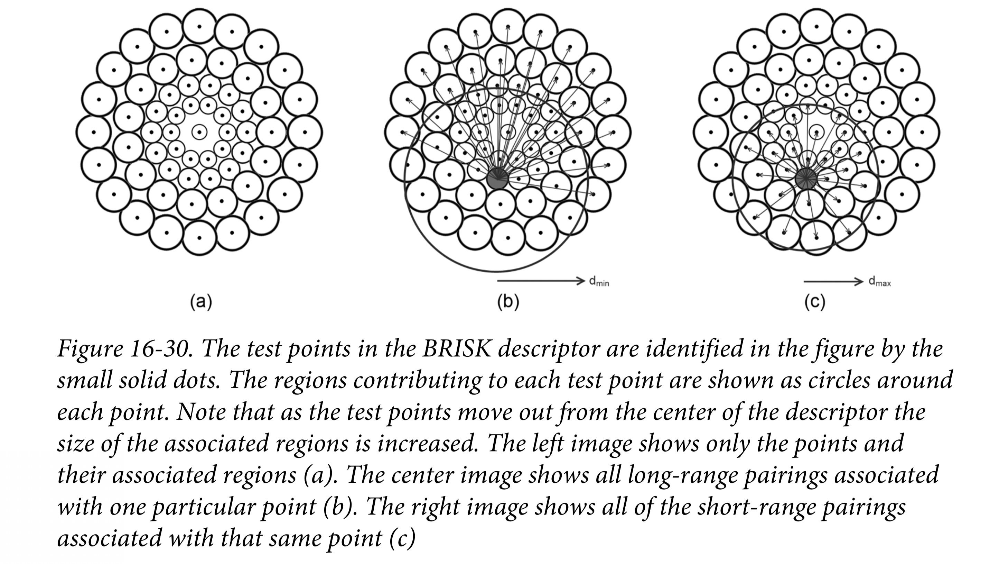

Harris-Shi-Tomasi Feature Detector cv::GFTTDetector()
{kind=link}
If the image is shifted a small amount (\(\Delta x\) , \(\Delta y\) ), how similar is it to its original self?
\begin{equation} c(x, y, \Delta x, \Delta y) = \displaystyle \sum_{(i, j) \in W(x, y)} w_{i, j}(I(i, j) - I(i + \Delta x, j + \Delta y))^2 \end{equation}
\begin{equation}
\boldsymbol{M}=\sum_{x, y} w(x, y)\left[\begin{array}{cc}{I_{x}^{2}} & {I_{x} I_{y}} \\
{I_{x} I_{y}} & {I_{y}^{2}}\end{array}\right]
\end{equation}
\(W\) is a Gaussian weighting that makes the differences near the center of the window contribute more strongly than those farther away from the center.
Harris and Shi-Tomasi critical steps are accomplished with the function cv::cornerHarris() and cv::cornerMinEigenVal() respectively.
{kind=link}
SimpleBlob Feature Detector cv::SimpleBlobDetector()
Blobs are not so clearly located, but represent regions of interest that might be expected to have some stability over time. Blob works best at simple environments where there are expected to be a few very well-defined objects to locate.
{kind=link}
Steps:
- convert image to grey scale
compute a series of thresholded (binary) imges from the grey scale images
minThresholdmaxThresholdthresholdStepstarting at
minThresholdstepping up until but NOT includingmaxThresholdtypically start with [50, 64], with small step, (like 10), up to [220, 235]. Thus, avoiding the often-less-informative ends of the intensity distribution.minDistBetweenBlobscontrols “overlapping”, blobs within the distance are considered to be related to the same blob. This one is in pixel units. The default value is10, which is probably suitable for images about \(640 x 480\).minRepeatabilitydetermines how many (consecutive) threshold images must contain overlapping blog candidates, which typically a small integer, but rarely less than two.
extract connected components by
cv::findContoursand compute the center of such contours, which are the candidate blob centers.blob centers that near one another (
minDistBetweenBlobs) and from images with adjacent thresholds are grouped together.assign these groups a radius and a center. The resulting objects are the keypoints.
FAST Feature Detector cv::FastFeatureDetector()
FAST only uses the points on a ring around \(P\).
The points are classified as either darker than \(P\), lighter than \(P\), or similar to \(P\). The classification is done by a threshold, t, such that
- darker ones: \(< I_p - t\)
- lighter ones: \(> I_p + t\)
- similar ones: in between
Once the classification is done, FAST requires more than half the total number on the ring of pixels that either all brighter or lighter than \(P\).
{kind=link}
In practice, four equidistant points are tested first, if there is not at least a pair of consecutive points that are brighter or darker than \(P\), then \(P\) cannot be a FAST feature.
{kind=link}
{kind=link}
SIFT (Scale Invariant Feature Transform) cv::xfeature2d::SIFT
{kind=link}
{kind=link}
- Convolving the original image with Gaussian kernels of various sizes, each with its successor, which is the one convolved with a slightly larger Gaussian
- Result is Difference of Gaussian, each pixel in the “stack” is compared with it neighbours ( imagine a cube, and the pixel is in the center)
- If a pixel has higher value in the DoG than all 26 of these neighbours, it’s considered a scale space extrema of the DoG operator.
Once all such scale space extrema have been found, SIFT proceeds to compute their descriptor.
- Assign an orientation to the keypoint, the orientation is the largest directional derivatives over the points around the keypoint. This way SIFT is orientation invariant.
{kind=link}
SIFT works best with 128( 8 in 4x4 region) element descriptors. It’s better to leave the default values unchanged.
SURF (Speeded-Up Robust Features) cv::xfeature2d::SURF
SURF defines a keypoint in terms of the local Hessian at a given point. Instead of using DoG like SIFT, SURF uses a box filter that approximates the difference of the two Gaussian kernel.
{kind=link}
The advantage is that we can evaluate them quickly using the integral image technique on box filters. In SIFT case the actual technique was to convolve with the two different Gaussian kernels and then subtract the results. In SURF case, the kernel was first subtracted and a single convolution is done with the different kernel.
For a feature scale \(s\), the \(20s \times 20s\) region centred on the feature by an angle given by the orientation just computed.
{kind=link}
This gives 4 numbers in each 4x4 grid, a total of 64 numbers, which form the entries in a 64-dimensional feature vector for the individual SURF feature.
{kind=link}
The default value of Hessian threshold is 100, which is pretty small, bascially means “all of them”. A reasonable threshold will be 1500. The Paremeter upright indicates that orientation should not be computed for features, and they should be treated as “vertical”, this is known as “upright-SURF”, or just “U-SURF”.
BRIEF (Binary Robust Independent Elementary Features) cv::xfeature2d::BriefDescriptorExtractor
BRIEF descriptor is that a feature is described as a series of tests, each of which simply compare a single pixel in the area of the feature to some other pixels, yielding a simple binary result( 0 or 1) based on which portion is brighter.
{kind=link}
The descriptor is the result of n such test arranged into a bit string.
Star/CenSurE Features cv::xfeature2d::StarDetector
{kind=link}
The Star feature also know as ( Center Surround Extrema) attempts to solve the problem providing the level of localisation of Harris and FAST while also providing scale invariance. There is no descriptors for Star feature, the author used a variant of the “U-SURF” feature descriptors.
{kind=link}
The concept of the Star feature is to compute all variants of some features at all scale and select the extrema across scale and location. At the same time, the goal was to have features fast to compute.
First stage: very fast approximation of DoG used by SIFT and the extraction of extrema of this operation.
Second stage: cull things that look too much like edges using scale-adapted version of Harris measure.
The scale-adapted Harris measure used a *a rate of change of DoG operator* rather than of image intensity. In OpenCV, this measure is binarized scale-adapted Harris measure. This binarized test is a way of quantifying the extent to which a particular point is a scale space extrema.
{kind=link}
BRISK cv::BRISK
BRISK is essentially based on FAST like “AGAST” detector.
{kind=link}
{kind=link}
- BRISK identifies the scale by first creating a space pyramid with a fixed number of octaves, and compute a fixed number of intra-octaves in between.
- Apply FAST (or actually AGAST) on these scales, then non-maxima compression, leaving only the “maximal” features, then Compute AGAST score at the corresponding locations.
Comparing to BRIEF, The BRISK descriptor is constructed by a series of rings around the center point. 
The short-range parings form the descriptor and the long-range parings from the dominant orientation.
{kind=link}